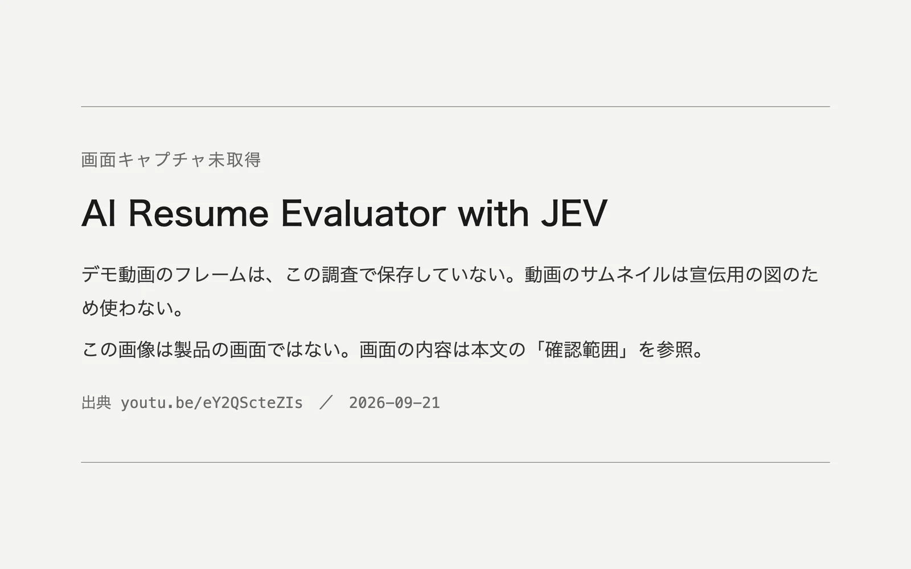

このUIがしていること
確認できているのは、履歴書を評価するアプリのデモ動画が存在する、というところまでである。以下は、画面の確認ではなく、この種の画面を見るときの論点である。
- 履歴書をフォームの項目に写す既存の事例と違い、こちらは履歴書そのものを評価する。結果が、人の採否に関わりうる。
- 総合の点数が大きく表示されると、根拠の薄い数字が、確かな評価のように読まれやすい。点数と一緒に、何を根拠にしたかを示しているかが、見るべき点になる。
- 評価される本人が、結果を見られるか、誤りを指摘できるかは、分からない。評価する側が、結果を直したり、保留にしたりできるかも、分からない。
- これはSDKの使い方を教えるためのデモで、実際の採用に使われているという主張はない。
キャプチャ
{kind=link}

（原寸の画像を開く）見る箇所掲載した画像は「画面キャプチャ未取得」の告知で、製品の画面ではない。デモ動画で見る箇所は、読み込んだ履歴書の情報と、評価の出力が並ぶ画面
入力から画面の変化まで
-
判断への入力
履歴書の文章。調査の記録では、動画に、読み込んだ履歴書の情報が映る。応募先の職務の条件を一緒に渡しているかどうかは、確かめていない。
-
Jevの判断
動画の題は、JevのJavaScript SDKで履歴書を評価する、としている。動画のサムネイルの図には、総合の評価をScore、強み・改善点・職務との適合をChoice、懸念の有無をNoulで尋ねるコードが描かれている。ただし、サムネイルは宣伝用の図であり、実際のデモがその通りかは確かめていない。
-
結果がUIをどう変えるか
調査の記録では、動画に、評価の出力が映る。どの値が、どういう形で、どの順に表示されるかは、記録されていない。
- 判断型の見立て
- 不明出典から判断できない
- 動画のサムネイルの図にはScore・Choice・Noulのコードが描かれているが、宣伝用の図であり、実際のデモの画面では確かめていない。
Jevとの適合
決まった観点ごとに、点数、選択、はい・いいえを返す使い方は、Jevの型をそのまま並べた構成で、SDKの教材として分かりやすい。ただし、型に収まることと、採用の判断に使えることは別である。精度、偏り、説明の十分さは、何も示されていない。
確認範囲と未確認事項
根拠は限定的で、調査監査の評価はB（追加の確認が要る段階）。作者のX投稿は自作の動画と記事の一覧で、この事例の根拠は、そこからリンクされた6分47秒のデモ動画である。調査では、動画に履歴書評価のアプリが映ることまでは確認されたが、入力、確率の見せ方、直しややり直しの操作は、フレーム単位で記録されていない。このサイトでは動画を再確認しておらず、画面を掲載していない。採用に関わる判断であり、精度と公平性は何も確かめられていない。
- 確認済み調査監査（2026-09-21）が確認した範囲。作者の投稿からリンクされた6分47秒のデモ動画が存在し、履歴書評価のアプリ（読み込んだ履歴書の情報と評価の出力）が映ること。このサイトの作業では、動画のページとサムネイルの図だけを見た
- 未検証デモの画面の中身、入力の内容、確率や点数の見せ方、直し・やり直し・保留の操作、評価の精度と公平性、リポジトリと動くアプリの有無
- 推定扱い質問型は不明として扱う。サムネイルの図にはScore・Choice・Noulのコードが描かれているが、宣伝用の図であり、実際のデモでは確かめていない
- 引用動画とサムネイルは掲載していない。掲載した画像はこのサイトで作成した告知で、製品の画面ではない